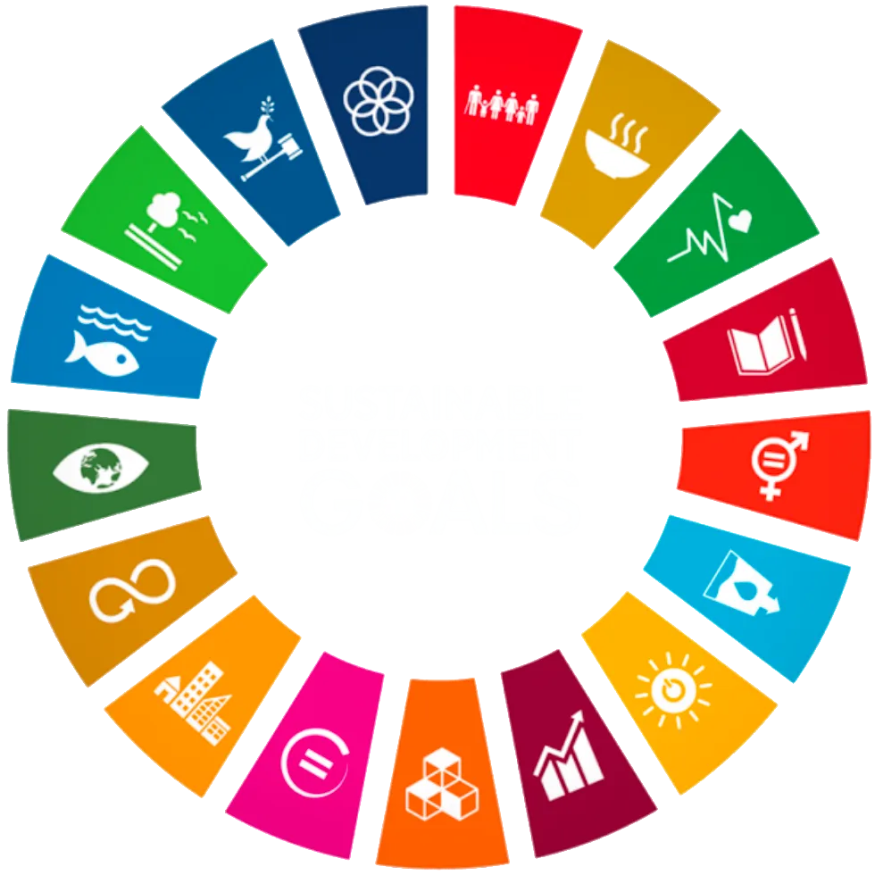
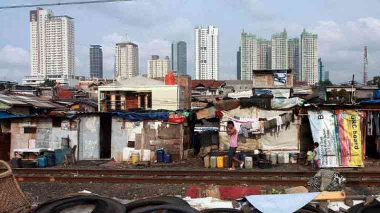

Gap sosial adalah jurang pemisah dalam masyarakat akibat ketimpangan akses terhadap sumber daya, ekonomi, dan peluang, yang sering kali berakar dari rendahnya kualitas pendidikan. Sementara itu, SDG 4 adalah agenda global untuk memastikan pendidikan yang inklusif, merata, dan kesempatan belajar seumur hidup bagi semua kalangan tanpa memandang atar belakang.
Keduanya saling berkaitan erat; pendidikan yang tidak merata menjadi akar utama penyebab gap sosial, karena masyarakat dari kelas bawah kesulitan mengakses pendidikan tinggi atau keterampilan kerja. Melalui target SDG 4, diharapkan kesenjangan ini dapat diputus sehingga setiap individu memiliki peluang mobilitas sosial yang setara untuk meningkatkan taraf hidup.
Ketimpangan fasilitas fisik dan digital antardaerah. Contohnya adalah ketertinggalan sekolah di daerah pelosok atau 3T dibandingkan dengan sekolah di kota-kota besar.
Menghambat target untuk secara substansial meningkatkan pasokan guru yang berkualitas dan mendapat pelatihan yang layak
Ketidakmampuan masyarakat berpenghasilan rendah dalam membiayai pendidikan lanjutan atau kebutuhan penunjang belajar.

Kesimpulan gap sosial adalah kondisi ketidakseimbangan, ketidakadilan, dan perbedaan mencolok dalam masyarakat terkait akses, peluang, serta distribusi sumber daya.